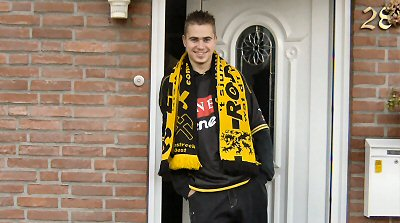
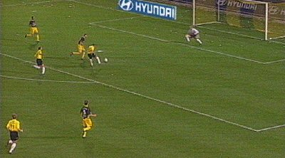
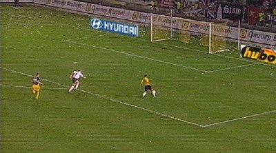
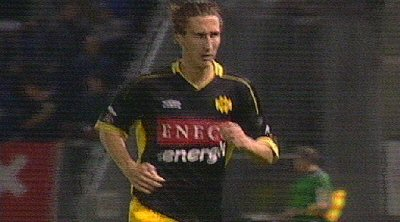
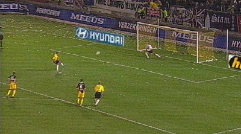
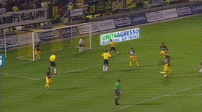

|
NAC
- Roda JC (4-0) 27 oktober 2004
|

Een Kerkraadse supporter staat de wachten op de Bakker-bus.

Boussabon scoort al in de 2e minuut 1-0 (met een gelukkig trapje).

Roda wordt overrompeld door het tactisch superieure NAC. Hier rondt
Lurling een schitterende aanval perfect af: 2-0 (18').

Brouwers die weer mee mocht spelen na zijn schorsing incasseerde
meteen 2 keer geel en mocht zodoende al in de 22e min. inrukken.

Boussabon benut de door Brouwers veroorzaakte penalty: 3-0 (23').

In de tweede helft maakt Boussabon zijn derde: 4-0 (58'). Het schijnt dat de
spelers van Roda niet de moeite wilden nemen om
hun supporters te gaan bedanken. Pas toen Luijpers (?) hen tot de
orde riep viel er een mager bedankje. Alleen Kujovic bedankte de fans
zoals het hoort en verliet als laatste het veld. FP heeft de spelers opgewacht
en een gesprek gehad met Trost.
Hoewel dit allemaal rustig verliep heeft het FP duidelijk kenbaar gemaakt
dat de supporters niet tevreden zijn en dat de onrust toeneemt.
© Koempels Pleasure Dome
|